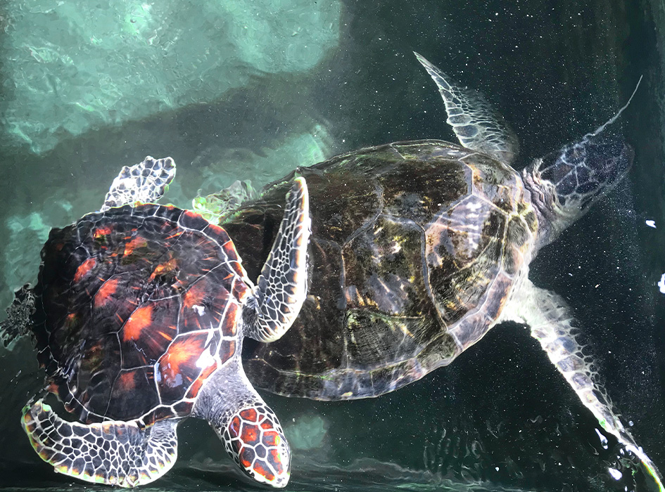
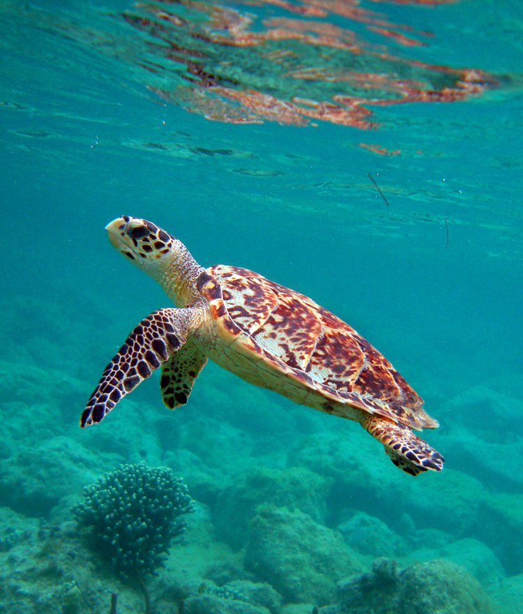
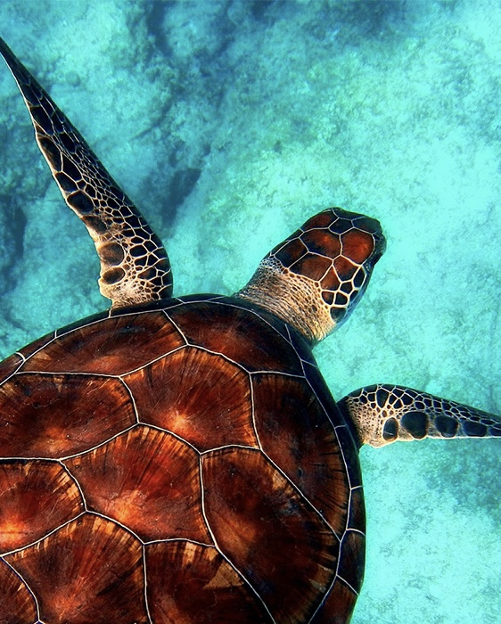

Turtle Hatcheries in Sri Lanka
Currently, the hatchery and rescue facility looks after five different species of turtles.You'll find out more
Currently, the hatchery and rescue facility looks after five different species of turtles.You'll find out more
Sri Lanka is fortunate to have five of the seven live sea turtle species documented in the globe reported along the lovely coastline belt of the island - arriving for breeding.The "big five" include the Leatherback scientifically known as Dermochelys coriacea, Hawksbill (Eretmochelys imbricata), Loggerhead (Caretta caretta), Olive Ridley (Chelonia mydas), and Hawksbill (Lepidochelys olivacea). Now, if we examine each of these turtles individually: In Sri Lankan waters, the green turtle is the most prevalent. An mature female, which may reach a maximum length of 1m and weighs about 250kg, can lay between 120 and 40 eggs.
The turtle population in Sri Lanka is a fascinating and vital part of the country's natural heritage. Sri Lanka is renowned for its diverse marine ecosystems, and the
coastal areas provide important nesting grounds for several species of turtles. Five species of sea turtles can be found in Sri Lankan waters: the Olive Ridley, Green, Hawksbill, Leatherback,
and Loggerhead turtles. These gentle creatures play a significant role in maintaining the health of the oceans by feeding on seagrass, jellyfish, and other marine organisms. However, the turtle
population faces numerous challenges, including habitat degradation, pollution, and illegal harvesting of eggs and shells. Conservation efforts have been implemented to protect these majestic
creatures, with dedicated turtle conservation projects and sanctuaries established along the coastline

Unique Features of the turtle population: The upper half of the turtle's shell is streamlined and short to make swimming easy, while the tortoise has a thicker shell for its protection on land. These differences in the shells of the turtles and tortoises help them in their different habitats. While tortoises have short, cylindrical limbs, turtles have broad, flattened flippers that make swimming much easier but make it quite difficult for females to move around on the beaches where they return to lay their eggs..
Many of these turtle hatcheries are located are within the western and southern coasts of Sri Lanka. However not all 7 of these turtles inhabit the area some turtles has their unique locations in the coasts of the paradise Isle. It's easy to recognize a turtle considering its unique features, but however each turtle type has its own unique feature Each turtle in each category can be identified by their unique turtle shell or by the patterns on their heads.
What's unique that of turtles is that they sleep underwater. Most sea turtles live their whole lives at sea, only coming ashore to lay eggs occasionally.
The locations are famous for its own unique turtle, and the unique turtle hatcheries.Turtles have a distinctive beak-like mouth that is adapted for their specific feeding habits. The shape of their
jaws and the presence of sharp, curved cusps allow them to consume a variety of food sources, including seagrasses, algae, jellyfish, and crustaceans

Five of the seven recognized species of turtles can be found off Sri Lanka's coast. These include the Olive Ridley turtle, the Green turtle, the Hawksbill turtle, the Leatherback turtle, and the Loggerhead turtle. The following provides more details regarding the five turtles.
According to reports, the olive ridley turtle is the most prevalent marine turtle in Sri Lanka in terms of both occurrence and nesting.

Olive Ridley Also known as the sea turtle Lepidochelys olivacea.A rare phenomena known as "arribada" causes the Olive Ridley, the sea turtle that is most frequently encountered, to come ashore.
In Sri Lankan waters, the green turtle is the most prevalent. Increasing in size to a maximum of 1m and weighs about 250kg.

The green turtle, also called Chelonia mydas, is widespread in SL. It is distinguishable by its faltered body covered in a tear-shaped shell that is dark gray.
The World Conservation Union has listed the hawksbill turtle (Eretmochelys imbricata) as critically endangered due to poaching for its beautiful, highly sought-after "tortoise-shell,"
It primarily lives in shallow lagoons and coral reefs, where it eats fish, sea anemones, and jellyfish.
The largest extant turtle is the leatherback sea turtle (Dermochelys coriacea), sometimes known as the lute turtle, leathery turtle, or simply the luth.

It can swim swiftly through the water thanks to its hydrodynamic body structure and a sizable pair of front flippers because it primarily feeds on jellyfish and other small marine invertebrates.
It can weigh up to 280KG. Their enormous head, resembles a log, gave rise to their name. It's critically endangered due to the human activity
The loggerhead sea turtle, or Caretta caretta, is reddish brown in appearance and has a little heart-shaped top shell.
In conclusion, Sri Lanka is blessed with a diverse array of primary turtle species that grace its coastal waters. The Olive Ridley, Green, Hawksbill, Leatherback, and Loggerhead turtles represent an important part of the country's rich marine biodiversity. However, these turtle species face significant conservation challenges. Habitat degradation, illegal poaching, pollution, and climate change all pose threats to their populations
Sadly, because of excessive human meddling and natural predators, Sea turtle populations worldwide are rapidly declining. Human poachers, who abuse the eggs to sell to turtle sanctuaries or to people as a source of food or medicine, are one of Sri Lanka's largest challenges. Its vital that sea turtles must be protected from actions like illegal harvesting, habitat destruction, and pollution. Many researchers are examining these dangers and figuring out how to protect the population.
In conclusion, the turtles in Sri Lanka face a multitude of threats that endanger their survival and the delicate balance of the marine ecosystems they inhabit. Habitat degradation, pollution, illegal harvesting, and fishing activities all contribute to the decline of turtle populations in the country. Urgent action is required to address these threats and implement effective conservation measures